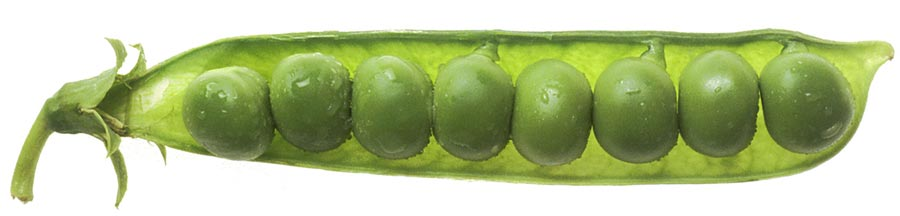
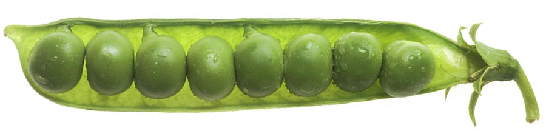

As a canine nutritionist, a big part of my job is advising dog owners on what is good and what is bad for their dogs and high on my list of 'good' ingredients has always been the garden pea. Note that we are not talking about pea starch or pea protein, both of which are certainly very contentious ingredients, but whole peas fed in moderation. Packed with a wide range of natural nutrients and antioxidants, whether fresh or dry, you can't go wrong with good old peas!
Well, that's what I thought before I read an article published last week claiming that peas are responsible for all sorts of diseases in dogs from arthritis to diabetes! And I wasn't the only one - on our facebook page, on the forum and via email, concerned pet owners have been coming to me asking if they have been unknowingly poisoning their pets with peas so I have been doing a bit of digging to give you what I hope will be a definitive guide to peas in pet food.

The article
Naturally, the only place to start my investigation was with the article itself and the assertions it makes. Entitled "Disappointing Trend In Rising Pet Food Market", its main criticisms of peas are 1. that they are not vegetables but legumes and 2. that they contain potentially harmful lectins.
While I don't want to get bogged down in semantics, legumes are in fact a class of vegetable so stating that all veg are good while peas are not veg and therefore bad is only going to lead to confusion. On the second point, peas do indeed contain lectins and they can certainly be very problematic for dogs (as we will see below), but it is important to note that a lot of other plants also contain them, especially in their seeds. Other high lectin foods include grains and potatoes, both of which are found much more often in pet foods than peas but the article fails to mention this at all.
That being said, the article does raise the important question of lectins and their effects on our pets.
Lectins
Lectins are a group of proteins that are found in peas and all sorts of other foods like whole grains, beans, lentils, dairy products, potatoes, tomatoes and some seafood. They have long been suspected of being involved in a whole host of health problems in humans and, more recently, our pets. Having said that, some lectins are more harmful than others so while those found in raw kidney beans, for example, can be extremely toxic, others can be quite harmless or, in some cases, even beneficial, apparently decreasing the incidence of certain diseases as well as serving in many basic cellular functions like cell to cell adherence and inflammatory modulation.
Humans and dogs are unable to digest lectins but the 'friendly' bacteria in the gut lend a hand, breaking down the molecules and, in the process, producing large amounts of gas. This is why many people experience bouts of wind after eating baked beans (the musical fruit) or other lectin-rich foods.
It is the indigestibility of lectins that can cause problems. Studies suggest that the intact lectins may damage the gut wall making it 'leaky'. This allows the lectins and other molecules to pass through the wall unimpeded and also hinders the absorption of beneficial nutrients like vitamins and minerals. Once outside the gut, these foreign molecules can trigger an immune response which can result in localised inflammation or effects further afield like skin rashes, joint pain and general inflammation. If exposure is prolonged, more serious chronic conditions may develop. If too many lectins are taken in at once, the body might try to expel them through vomiting and/or diarrhoea.
The good news is that the effects of dietary lectins generally only extend for as long as they are in the body and recovery is often very rapid once they have been removed.

Do I need to worry?
It all sounds pretty scary so far but one key point that the article did not mention is that sprouting, fermenting, soaking and cooking can dramatically reduce lectin toxicity. Most lectins are denatured, making them completely harmless, when cooked at temperatures above 100oc for as little as 15 minutes. For example, cooking kidney beans from raw reduces their lectin concentrations from 20,000-70,000 units before to just 200-400 units after.
Since peas and other lectin-rich foods are generally well cooked in pet foods, saying the lectins they carry are unhealthy is almost always incorrect.
Also, since the symptoms of lectin toxicity are usually very easy to spot (digestive upsets, allergic reactions etc), if your dog is healthy then you can be fairly confident that lectin poisoning is not occurring.
If, on the other hand, your dog is unwell, or if you would just like to reduce lectin intake for peace of mind, there are a couple of steps you can take.
How do I reduce my pet's lectin intake?
The best way to reduce lectin intake is, obviously, to feed less lectin-rich foods. Unfortunately, as far as commercial dog foods go, almost all contain lectin-rich ingredients in one form or another so moderation is about the best you can hope for. Try to look for foods that contain plenty of meat as this will reduce the proportion of other ingredients in the food and steer away from anything with too much grain, white potato, peas or lentils.
A varied diet will also help to ensure no potentially problematic ingredients are fed to excess while also helping to defend against deficiencies.
Uncooked peas are likely to contain the highest levels of lectins so they should be fed sparingly.
The bottom line
Peas may not be quite the star ingredient we once thought but neither are they as bad as the article suggests. As with all ingredients, too much is best avoided, especially for very sensitive dogs, but for the vast majority of dogs I think that whole peas, fed in moderation, can still play an important role in a balanced diet.
References
Rabia Hamid and Akbar Masood. Dietary Lectins as Disease Causing Toxicants. Pakistan Journal of Nutrition 8 (3): 293-303, 2009. Link